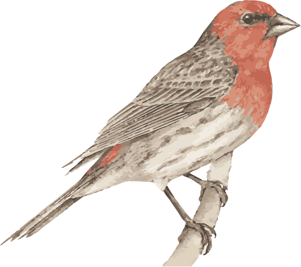

The Purple Finch is the bird that Roger Tory Peterson famously described as a “sparrow dipped in raspberry juice.” For many of us, they’re irregular winter visitors to our feeders, although these chunky, big-beaked finches do breed in northern North America and the West Coast. Separating them from House Finches requires a careful look, but the reward is a delicately colored, cleaner version of that red finch. Look for them in forests, too, where you’re likely to hear their warbling song from the highest parts of the trees.
Purple Finches eat mainly seeds of coniferous trees and elms, tulip poplars, maples, and others. They also eat soft buds, nectar (extracted by biting the bases off flowers), and many berries and fruit, including blackberries, honeysuckle, poison ivy, crabapples, juniper berries, cherries, and apricots. In winter you may see Purple Finches eating seeds of low plants like dandelions, ragweed, and cocklebur. They eat some insects, including aphids, caterpillars, grasshoppers, and beetles.
In summer, Purple Finches are primarily birds of moist, cool evergreen forests. You’ll also find them in mixed forests, along wooded streams, and in tree-lined suburbs. In winter they’re more widespread, using forests, shrubby areas, weedy fields, hedgerows, and backyards.
Look for Purple Finch nests far out on the limb of a coniferous tree or, particularly to the south of its breeding range, in deciduous trees such as oaks, maples, and cherries. Occasionally nests in shrubs or among vine tangles. Nests can be 2.5 feet up to 60 feet off the ground and are often built under an overhanging branch for shelter.
Nests take 3-8 days to build, with the female doing most or all of the work. She makes the base from twigs, sticks, and roots, then lines the cup with fine grasses and animal hair. The finished nest is about 7 inches wide and 4 inches tall.